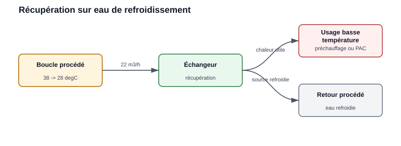
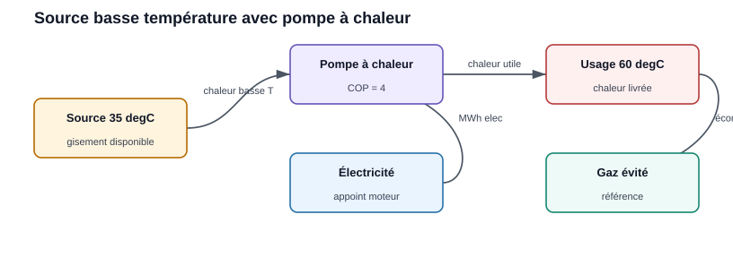
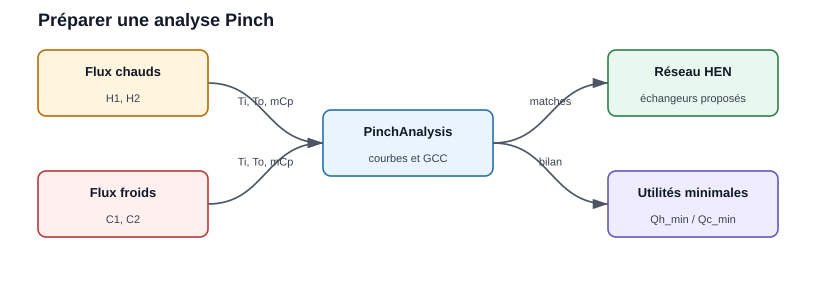
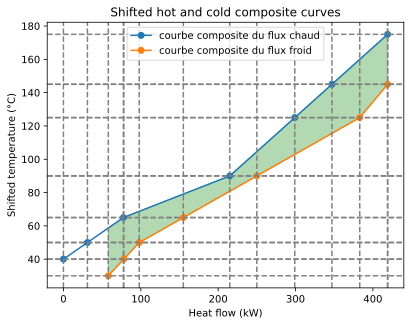
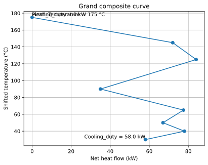

Examples utilisateur
Example 1 : récupération on eau de refroidissement
Une boucle d’eau sort d’un procédé à 38 degC et peut être refroidie jusqu’à
28 degC before retour. Le flow rate est de 22 m3/h et le site fonctionne
6 500 h/an.

La source basse temperature est séparée de l’usage by un échangeur.
debit_m3_h = 22
rho = 1000
cp = 4.18
t_source = 38
t_retour = 28
heures = 6500
debit_kg_s = debit_m3_h * rho / 3600
puissance_kw = debit_kg_s * cp * (t_source - t_retour)
energie_mwh = puissance_kw * heures / 1000
print(f"Puissance récupérable : {puissance_kw:.1f} kW")
print(f"Energie annuelle : {energie_mwh:.0f} MWh/an")
Result attendu :
Indicateur |
Valeur |
Unité |
|---|---|---|
Power récupérable |
255,4 |
kW |
Energy annuelle récupérable |
1 660 |
MWh/an |
Lecture for l’utilisateur :
le gisement est basse temperature ;
il peut alimenter un préchauffage ou l’évaporateur d’une pompe à chaleur ;
la valeur dépend fortement de la simultanéité with le besoin.
Note
Valorisation en CEE
La heat recovery on un compresseur d’air (ou tout autre rejet
thermique) peut être valorisée en Certificats d’Économies d’Energy via la
fiche IND-UT-103. Le calcul CEE est traité in le chapitre dédié :
voir Certificats d’Économies d’Energy (« Example 3 : heat recovery sur
compresseur d’air »).
Example 2 : comparer récupération directe et pompe à chaleur
Une source à 35 degC ne peut pas alimenter directement un usage à
60 degC. On compare alors la récupération directe utilisable à basse
temperature with une pompe à chaleur.

La pompe à chaleur relève le niveau de temperature au prix d’une consommation électrique.
puissance_source_kw = 180
heures = 5000
cop_pac = 4.0
prix_elec_eur_mwh = 120
prix_gaz_eur_mwh = 55
chaleur_livree_mwh = puissance_source_kw * heures / 1000
electricite_pac_mwh = chaleur_livree_mwh / cop_pac
gaz_evite_mwh = chaleur_livree_mwh
cout_pac = electricite_pac_mwh * prix_elec_eur_mwh
gain_gaz = gaz_evite_mwh * prix_gaz_eur_mwh
gain_net = gain_gaz - cout_pac
print(f"Chaleur livrée : {chaleur_livree_mwh:.0f} MWh/an")
print(f"Electricité PAC : {electricite_pac_mwh:.0f} MWh/an")
print(f"Gain net énergie : {gain_net:.0f} EUR/an")
Result attendu :
Indicateur |
Valeur |
Unité |
|---|---|---|
Chaleur livrée |
900 |
MWh/an |
Électricité PAC |
225 |
MWh/an |
Coût électrique |
27 000 |
EUR/an |
Gaz évité |
49 500 |
EUR/an |
Gain net energy |
22 500 |
EUR/an |
Interprétation :
si le gain net est négatif, la pompe à chaleur n’est pas pertinente with ces hypothèses de prix ;
si le gaz évité est cher ou carboné, l’intérêt augmente ;
le COP réel doit être recalculé with les temperatures source et usage.
Example 3 : préparer une analyse Pinch
Lorsque plusieurs hot and cold streams existent, l’analyse Pinch permet d’identifier la récupération maximale théorique before de dessiner les échangeurs.

Les hot and cold streams alimentent l’analyse, qui fournit les utilités minimales et les appariements d’échange.
import pandas as pd
from PinchAnalysis import PinchAnalysis
# Les colonnes 'id' et 'name' sont requises par PinchAnalysis.Object
df = pd.DataFrame({
"id": [1, 2, 3, 4],
"name": ["H1", "H2", "C1", "C2"],
"Ti": [180, 95, 25, 45],
"To": [70, 45, 120, 140],
"mCp": [2.4, 3.1, 2.0, 1.8],
"dTmin2": [5, 5, 5, 5],
"integration": [True, True, True, True],
})
pinch = PinchAnalysis.Object(df)
print(f"Pincement : {pinch.Pinch_Temperature} degC") # 175
print(f"Utilité chaude minimale : {pinch.Heating_duty} kW") # 0
print(f"Utilité froide minimale : {pinch.Cooling_duty} kW") # 58.0
print(f"Chaleur récupérée : {pinch.heat_recovery} kW") # 361.0
pinch.plot_composites_curves()
pinch.plot_GCC()
Results réels :
Indicateur |
Attribut (valeur) |
Unité |
|---|---|---|
Point de pincement |
|
degC |
Utilité chaude minimale |
|
kW |
Utilité froide minimale |
|
kW |
Chaleur récupérée |
|
kW |
Ici l’utilité chaude minimale est nulle : les flux chauds fournissent, par intégration, la totalité du besoin de chauffe ; seule une utilité froide de 58 kW reste nécessaire, for 361 kW récupérés.
Plots générés by l’example (outputs réelles) :

pinch.plot_composites_curves() : composites chaude et froide en
temperatures décalées ; le recouvrement = 361 kW récupérables.

pinch.plot_GCC() : la grande courbe composite touche l’axe au pincement
(175 °C) et montre l’utilité froide résiduelle (58 kW) en bas.
Ce cas est à utiliser quand l’utilisateur veut passer d’un simple inventaire à une stratégie d’intégration thermique complète.